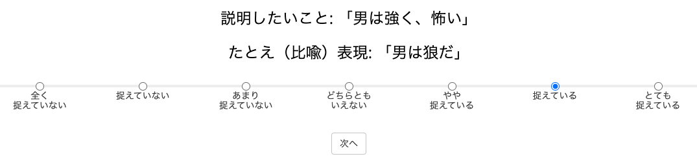

<!DOCTYPE html>
<html>
  <head>
    <meta charset="UTF-8" />
    <script src="./jspsych.js"></script>
    <script src="./plugins/plugin-survey-html-form.js"></script>
    <script src="./plugins/plugin-html-keyboard-response.js"></script>
    <script src="./plugins/plugin-survey-text.js"></script>
    <script src="./plugins/plugin-fullscreen.js"></script>
    <script src="./plugins/plugin-survey-likert.js"></script>
    <script src="./stimulus/stimulus_practice_aptness.js"></script>
    <script src="./stimulus/stimulus_main_aptness_a.js"></script>
    <script src="./stimulus/stimulus_main_aptness_b.js"></script>
    <script src="./stimulus/stimulus_main_aptness_c.js"></script>
    <script src="http://ajax.aspnetcdn.com/ajax/jQuery/jquery-3.4.1.min.js"></script>
    <link rel="stylesheet" href="./css/jspsych.css" />
  </head>

  <body></body>
  <script>

    //Though the original program save the data to the server, this program just showed the result obtained in the program.
    const jsPsych = initJsPsych({
        on_finish: () => {
            jsPsych.data.displayData();
        },
    });

    //parameters for setting the condition
    const queries = {};
    queries["cwid"] = "XXXXX";//for debugging
    queries["Condition"] = "A";//please replace A to C if you are interested in other conditions
    jsPsych.data.addProperties(queries);

    const ex_start_time = new Date();
    const ex_start_time_text = ex_start_time.getFullYear()+"/"+(ex_start_time.getMonth()+1)+"/"+ex_start_time.getDate()+ " "+ ex_start_time.getHours()+":"+("0" + ex_start_time.getMinutes()).slice(-2)+":"+("0" + ex_start_time.getSeconds()).slice(-2);
    jsPsych.data.addProperties({"StartTime":ex_start_time_text});//参加者情報に格納

    //instruction and preparation of the task
    //all the stimulus were presented in Japanese
    const FullScreen = {
        type: jsPsychFullscreen,
        fullscreen_mode: true,
        message:"これから実験を始めます。実験はフルスクリーンで行われます。<br>"+
        "（フルスクリーン非対応ブラウザの場合を除く）<br>"+
        "*なお、実験を途中でやめる場合は、Escキーを押すことでフルスクリーンを解除することができます。<br><br>"+
        "「次へ」ボタンを押すと次に進みます。<br><br>",
        button_label:"次へ",
        delay_after:1000
    };
    
    const instruction_1 = {
        type: jsPsychSurveyHtmlForm,
        html:
              "<p style='text-align:left;'>この課題では、「たとえ（比喩）表現」と、「説明したいこと」が呈示されます。</p>" +
              "<p style='text-align:left;'>あなたの課題は、「たとえ（比喩）表現」が「説明したいこと」の重要な特徴をどのくらい適切に捉（とら）えているかを<br>「全く捉えていない」から「とても捉えている」の7段階で回答することです。</p>" +
              "<p style='text-align:left;'>次のページで、実例をご覧いただきながら説明します。</p>" +
              "<p><br><br></br>" +
              "<p style='text-align:left;'>以上の教示を理解したら「次に進む」ボタンを押して、次に進んでください。</p>",
        button_label: "次に進む",
        data: { task: 'instruction_1' },
    };

    const instruction_2 = {
        type: jsPsychSurveyHtmlForm,
        html:
              "<p style='text-align:left'>実際の課題では以下のような画面が呈示されます。</p>" +
              "<p style='text-align:left'>この例であれば、「男は狼だ」というたとえ（比喩）表現が、「男は強く、怖い」の重要な特徴を捉えている程度を回答するのが、あなたの課題になります。</p>" +
              "" +
              "<p><br></p>" +
              "<p style='text-align:left'>この例であれば、「男は狼だ」というたとえ表現が、「男は強く、怖い」ということを、「捉えている」と判断した場合は、上記のように選択することになります。</p>" +
              "<p style='text-align:left'>なお、この課題には正解-不正解はありませんので、あなたが思った通りにお答えください。</p>" +
              "<p><br></p>" +
              "<p style='text-align:left'>以上の教示を理解したら「次に進む」ボタンを押して、次に進んでください。</p>",
        button_label: "次に進む",
        data: { task: 'instruction_2' },
    };

    const instruction_3 = {
        type: jsPsychSurveyHtmlForm,
        html:
              "<p style='text-align:left'>次のページでは、あなたが実際にこの課題を理解しているかを確認するための理解確認課題に取り組んでいただきます。</p>" +
              "<p style='text-align:left'>理解確認課題は4問呈示され、それぞれについて「捉えていない」か「捉えている」かの2択で回答いただきます。</p>" +
              "<p><br></p>" +
              "<p style='text-align:left'>以上の教示を理解したら「理解確認課題に進む」ボタンを押して、理解確認課題に取り組んでください。</p>",
        button_label: "理解確認課題に進む",
        data: { task: 'instruction_3' },
    };

    const instruction_4 = {
        type: jsPsychSurveyHtmlForm,
        html:
              "<p style='text-align:left'>1つ目の例では、「幸福は黄金だ」という表現は、呈示された特徴（大切で、価値があり、輝かしい）を捉えていると考えられます。</p>" +
              "<p style='text-align:left'>同様に、3つ目の例では、「結婚は冷蔵庫だ」という表現は、呈示された特徴（状態を保存し、冷える）を捉えていると考えられます。</p>" +
              "<p style='text-align:left'>一方で、2つ目の例では、「弾丸は亀だ」という表現は、呈示された特徴（速い）を捉えていないと考えられます。</p>" +
              "<p style='text-align:left'>同様に、4つ目の例では、「辞書は顕微鏡だ」という表現は呈示された特徴（分厚く、四角い）を捉えていないと考えられます。</p>" +
              "<p><br></p>" +
              "<p style='text-align:left'>次のページから本番に移ります<br></p>" +
              "<p style='text-align:left'>本番では練習と異なり、<u>「全く捉えていない」から「とても捉えている」の7段階で回答していただきます。</u><br></p>" +              
              "<p style='text-align:left'><b>休憩を取る場合は、この画面で取り、本番（10分~15分）は集中して休まずに取り組んでください。</b><br></p>" +
              "<p><br></p>" +
              "<p style='text-align:left'>以上の教示を理解したら「本番に進む」ボタンを押して、本番に取り組んでください。</p>",
        button_label: "本番に進む",
        data: { task: 'instruction_4' },
    };

    const debrief = {
        type: jsPsychHtmlKeyboardResponse,
        stimulus:
              "<p style='text-align:left'>これで実験は終了です。お疲れ様でした。</p>" +
              "<p style='text-align:left'>スペースキーを押して次の実験に遷移するのをお待ちください。</p>",
        choices: [' '],
        data: { task: 'debrief' },
        on_finish:function(data){

            //実験が終わった時間
            const ex_finish_time = new Date();
            const ex_finish_time_text = ex_finish_time.getFullYear()+"/"+(ex_finish_time.getMonth()+1)+"/"+ex_finish_time.getDate()+ " "+ ex_finish_time.getHours()+":"+("0" + ex_finish_time.getMinutes()).slice(-2)+":"+("0" + ex_finish_time.getSeconds()).slice(-2);
            jsPsych.data.addProperties({"EndTime":ex_finish_time_text});//参加者情報に格納
        }
    };

    //likert: options
    const practice_likert_scale = ["捉えていない", "捉えている"];
    const main_likert_scale = ["全く<br>捉えていない", "捉えていない", "あまり<br>捉えていない", "どちらとも<br>いえない", "やや<br>捉えている", "捉えている", "とても<br>捉えている"];

    const createTrial = (setting, scale) => {

        const aptness_rating = {
            type: jsPsychSurveyLikert,
            preamble:
                "<p>「たとえ（比喩）表現」が「説明したいこと」の重要な特徴をどのくらい適切に捉（とら）えているかを、選択肢から回答してください。</p>",
            questions: [
                {
                    prompt: "<p style='text-align:center; font-size:18pt;'>説明したいこと: 「" + `${setting.Sentence}` + "」</p>" + 
                        "<p style='text-align:center; font-size:18pt;'>たとえ（比喩）表現: 「" + `${setting.Topic}` + "は" + `${setting.Vehicle}` +  "だ」</p>",
                    name: `${setting.Topic}`,
                    labels: scale,
                    required: true
                },
            ],
            button_label: '次へ',
            data: {
                task: 'aptness_rating',
                TrialType: setting.TrialType,
                SetType: setting.SetType,
                FinStimID: setting.FinStimID,
                NID: setting.NID,
                Topic: setting.Topic,
                Vehicle: setting.Vehicle,
                NumFeatures: setting.NumFeatures,
                Sentence: setting.Sentence,
            },

            on_load: (data) => {
                //ref: https://tutorial.eyehunts.com/js/disable-enter-key-on-an-input-field-in-javascript-example-code/
                document.addEventListener('keypress', function (e) {
                    if (e.keyCode === 13 || e.which === 13) {
                        e.preventDefault();
                        return false;
                    }       
                });

                const focused_elem = document.activeElement;
                focused_elem.blur();
            },

            on_finish: (data) => {
                data.Aptness = jsPsych.data.get().last(1).values()[0].response[Object.keys(jsPsych.data.get().last(1).values()[0].response)[0]] + 1;
            },
        };
        return aptness_rating;
    };

    const practice_trials = practice_trial_settings.map((s, practice_likert) => createTrial(s, practice_likert_scale));
    const practice_trials_tl = {timeline: practice_trials};

    // main_trialsが条件分岐するように修正
    //ref: https://qiita.com/talog/items/ea7ff725dd02319f912b
    const main_trials = (() => {
        switch (queries["Condition"]) {
            case "A": return main_trial_settings_a.map((s, main_likert) => createTrial(s, main_likert_scale));
            case "B": return main_trial_settings_b.map((s, main_likert) => createTrial(s, main_likert_scale));
            case "C": return main_trial_settings_c.map((s, main_likert) => createTrial(s, main_likert_scale));
            default : console.log("main trial: file load failed");
        }
    })();

    const main_trials_tl = {timeline: jsPsych.randomization.repeat(main_trials, 1)};

    jsPsych.run([FullScreen, instruction_1, instruction_2, instruction_3, 
        practice_trials_tl,
        instruction_4,
        main_trials_tl,
        debrief]);

  </script>
</html>